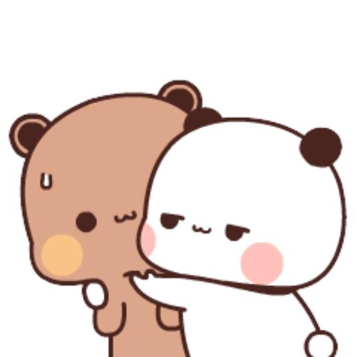
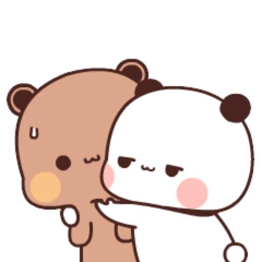

Sentuh LOVEnya!


 



haiii! itu pasti kamuu kan yaa?
okaayy, first of all i justt wanna say thank u for youu
kamu pasti mikir yaaa " terimakasih buat apa sih? "
terimakasih karena udah ada buat aku sampai detik inii
terimakasih udah mau nerima diri akuu
terimakasih udah mau luangin waktu kamu buat aku
terimakasih udah memilih aku disaat diluar sana masih punya banyak pilihan
aku masih punya beribu alasan untuk mengucapkan terimakasih padamu
intinyaa aku sayang bangett sama kamu, rasa sayang aku ke kami itu infinity
jangan pergi dari hidupp aku yaaa? jangan pernahh, aku gamau ditinggalin
tetepp jadi aditt yang aku kenall okeeii? jangan pernah berubah ataupun menjauh dari aku :(
maaafff kalau aku belum cukup buat kamu :( maaf kalo aku sering ngecewain kamuu...
akuu akan selalu bangga punya kamu! aku banggaaa banget punya kamuuu
KAMU ITU SEMPURNAA, AKU HARUS NGULANGIN BERAPA KALI LAGI... kamu itu kayak berbeda aja dari yang lain..
jangan pernah ngerasa sendiri ya? aku disini buatt kamuu.. datangin aku kalau kamu merasa lelah
jangann pernah takut tegur atau marahin aku, marahin aku kalau aku emang bersikap keterlaluan
aku ga pernah nyangka bisa sampai saat ini sama kamu, kamu adalah orang yang ngga aku sangka
kamuu ituu sempurnaa malah lebih dari kata sempurna, kamu harus percaya diri yaa!
gaa ada yang salah sama kamuuu, di mata aku kamu itu bintang yang bersinar di tengah gelapnya malam
loafffyuuuu, maaff kalo capee bacanya hehehe. etss adaa satu lagii
Klik untuk Geser!
sayaaanggg, aku akan selalu sayang sama kamu dan memahami sikap kamu. aku ga bakalan cape ngadepin sikap kamuu, aku akan berusaha menjadi perempuan seperti apa yang kamu mau. aku akan selalu disini, menemani perjalanan mu yang panjang ini.
i love youuuu ü§ç